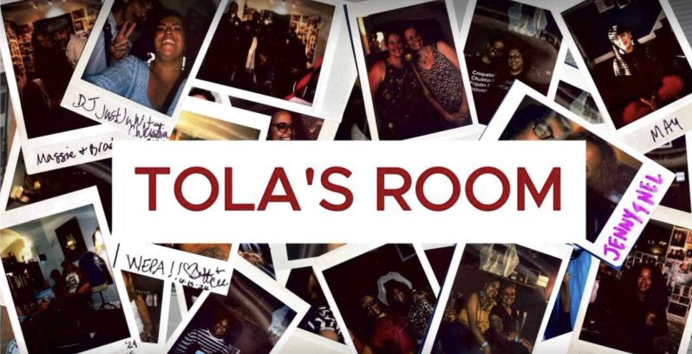
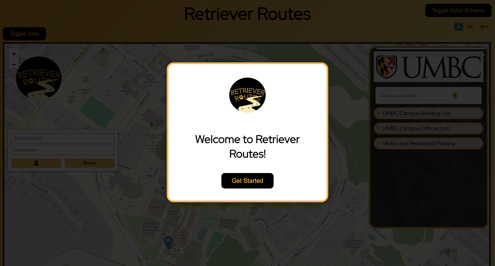
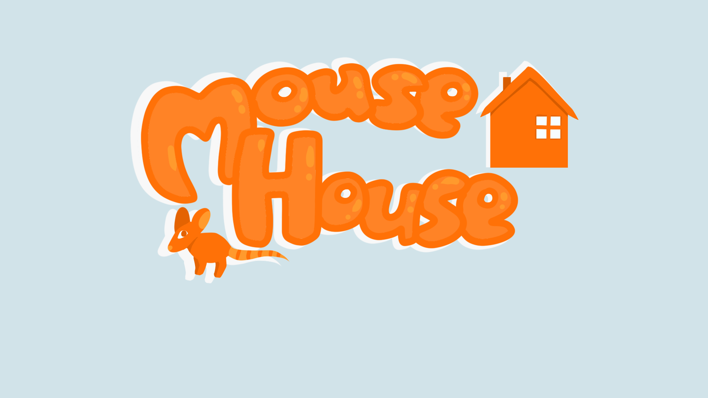
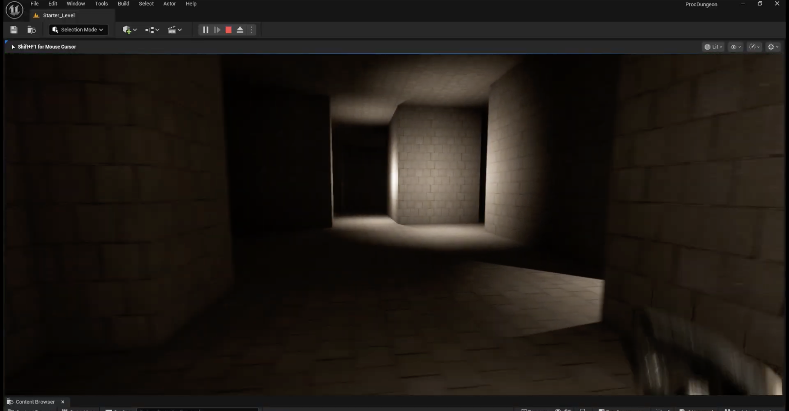

My Work

Tola's Room CoLab
Collaborated with mentors and peers in partnership with a local Puerto Rican Art Museum in Baltimore, Maryland, to design an immersive virtual tour highlighting the history of the Puerto Rican diaspora.
Utilized Premiere Pro and advanced editing software to capture and produce an interactive 360-degree video tour of the museum space.

Retriever Routes
An interactive campus navigation app tailored for UMBC. Built using the Leaflet Mapping System and Leaflet Routing Machine to provide real-time, user-friendly directional routing across campus.
Engineered within a 3-month timeline using Agile/SCRUM methodologies, managing deliverables via JIRA while authoring comprehensive SRS documentation and sprint reports.

MouseHouse
A first-person exploration game developed in Unity (C#) featuring dynamic enemy interactions, custom player health systems, and radial threat detection behaviors.
Collaborated across multidisciplinary teams of programmers and artists to architect core gameplay logic, build interactive environment mechanics, and ship a fully functional prototype.

First Person Procedural Level Generator
A procedural dungeon generation system designed for first-person dungeon crawlers, dynamically rendering complex maze layouts and unique play spaces every run.
Engineered entirely in Unreal Engine using custom C++ algorithms (500+ lines of code) to control dungeon geometry, branching logic, and layout seed generation.